Proliferatívny zápal, hojenie a reparácia
Ako telo nahrádza to, čo zápal alebo úraz zničil: kedy sa tkanivo obnoví presne (regenerácia) a kedy len zaplátá väzivom (reparácia), čo je granulačné tkanivo, ako sa hojí rana, trombus, nekróza, nerv a cudzie teleso, prečo jazva niekedy zlyhá alebo prerastie a ako z vlekleho zápalu vzniká fibróza orgánu.
Predpoklady: → 1.7 Príčiny a ďalší osud nekrózy · → 3.5 Priebeh v čase a ukončenie zápalu · → 3.4.1 Leukocytová kaskáda – ako leukocyt opustí cievu
Odborná kontrola: zatiaľ neprebehla — fakty sú overené len podľa zdrojov uvedených na konci kapitoly · Nahlásiť chybu
5.1Proliferácia – tretia zložka zápalu
Každý zápal má tri zložky: poškodenie tkaniva (alterácia), výpotok a bunky z ciev (exsudácia a infiltrácia, → 3.3 Cievna fáza – exsudácia) a proliferáciu – množenie buniek priamo v ložisku. Proliferácia je tá časť, ktorá škodu opravuje. Pracujú na nej tri skupiny buniek:
- bunky, ktoré upratujú – monocyty sa v tkanive menia na makrofágy a tie sa v ložisku ďalej delia,
- bunky, ktoré stavajú – endotel (nové cievy) a fibroblasty (nové väzivo); časť ich prekurzorov prichádza z kostnej drene,
- bunky pôvodného tkaniva – epitel, hepatocyty, ktoré sa po poškodení vrátia z pokoja do bunkového cyklu.
Proliferácia = bunky deliace sa v ložisku opravujú škodu. Dva výsledky: regenerácia (rovnaké bunky, plná funkcia) alebo reparácia (granulačné tkanivo → jazva).
Hromadenie nie je proliferácia. Neutrofilov je v ložisku akútneho zápalu obrovské množstvo, no ani jeden sa tam nerozdelil – všetky priniesla krv a po splnení úlohy hynú (→ 3.4.1 Leukocytová kaskáda – ako leukocyt opustí cievu). Proliferujú až makrofágy, lymfocyty v uzline, endotel a fibroblasty.
Proliferácia nastupuje v každom zápale, spravidla od 2.–3. dňa, keď prvá vlna neutrofilov opadne. Zápal nazývame proliferatívny (produktívny) vtedy, keď v obraze prevláda – teda vo fáze hojenia a pri chronickom zápale, v ktorom poškodenie a oprava prebiehajú súčasne (→ 5.9 Chronický zápal – keď poškodenie a oprava bežia naraz). Ak príčinu nepoznáme, hovoríme o primárnom (idiopatickom) proliferatívnom zápale (→ 5.10 Fibrózy bez známej príčiny).
Výsledok opravy má dve podoby:
- regenerácia (hojenie ad integrum) – stratené bunky nahradia bunky toho istého druhu a orgán funguje ako predtým,
- reparácia (hojenie per defectum) – miesto zaplní väzivo; drží tvar a pevnosť, ale prácu pôvodných buniek nerobí – výsledkom je jazva (lat. cicatrix).
Reparáciu vykonáva granulačné tkanivo – dočasné mladé väzivo, ktoré vyplní defekt. Skladá sa z troch vecí: z novotvorených kapilár, z fibroblastov, ktoré tvoria kolagén, a z makrofágov, ktoré celý dej riadia; medzi nimi je riedka medzibunková hmota. Vzniká pri každom hojení, na ktoré regenerácia nestačí, a v priebehu týždňov dozrie na jazvu. Názov má podľa zrnitého červeného povrchu (lat. granulum = zrnko) (→ 5.3 Granulačné tkanivo – motor reparácie).
Pre hojenie niečoho, čo telo nevie rozpustiť – fibrínu, krvnej zrazeniny, trombu, nekrózy – sa používa starší pojem organizácia: granulačné tkanivo vrastie do hmoty, postupne ju nahradí a zmení na väzivo.
Granulačné tkanivo nie je granulóm. Podobný je len názov.
- Granulačné tkanivo – nešpecifické mladé väzivo s kapilárami; vzniká pri každom hojení bez ohľadu na príčinu.
- Granulóm – ohraničený uzlík z aktivovaných makrofágov (epiteloidných buniek); typ chronického zápalu s vlastnými príčinami (→ 7.1 Granulóm – keď makrofág nevie stráviť, čo pohltil).
5.2Kto sa vie obnoviť: bunkový cyklus a kostra tkaniva
O tom, či sa tkanivo zregeneruje, rozhodujú dve otázky: či sa bunka ešte vie deliť a či prežila kostra, do ktorej sa má nová bunka zaradiť.
O regenerácii rozhodnú dve otázky: vie sa bunka deliť a prežila kostra tkaniva. Keď kostra padne, výsledkom je jazva – aj v pečeni.
Bunka, ktorá sa nedelí, stojí mimo bunkového cyklu vo fáze G₀; či sa z nej vie vrátiť, závisí od typu tkaniva. Po poškodení ju rastové faktory vrátia do fázy G₁, odkiaľ pokračuje cez syntézu DNA (S) a fázu G₂ do mitózy (M). Samotná regenerácia má tri kroky: bunky sa namnožia, premiestnia sa na miesto straty (migrácia) a dozrejú na funkčné (diferenciácia). Nové bunky dodávajú tkanivové kmeňové bunky a ich potomkovia, progenitorové bunky.
Podľa toho, ako ochotne sa bunky delia, sa tkanivá delia na tri skupiny:
| Labilné | Stabilné | Permanentné | |
|---|---|---|---|
| Bunkový cyklus | delia sa neustále, lebo bunky neustále strácajú | kľudové (G₀), do cyklu sa vrátia po poškodení | cyklus opustili natrvalo (terminálna diferenciácia) |
| Zdroj nových buniek | kmeňové bunky v bazálnej vrstve, kryptách, dreni | zrelé bunky a progenitory | žiadny alebo zanedbateľný |
| Príklady | krycie epitely (pokožka, sliznice tráviacej, dýchacej a močovej rúry), kostná dreň, lymfatické tkanivo | pečeň, oblička, pankreas, žľazy, endotel, fibroblasty, hladký sval | neuróny, kardiomyocyty, bunky očnej šošovky |
| Hojenie po strate buniek | rýchla regenerácia | regenerácia, ak prežila kostra | jazva (v mozgu glióza) |
Samotná schopnosť deliť sa však nestačí. Epitel potrebuje bazálnu membránu, po ktorej sa rozlezie, a hepatocyty potrebujú retikulínovú sieť lalôčika, aby sa usporiadali do trámcov s prívodom krvi a odvodom žlče. Bunka, ktorá sa rozmnoží mimo tejto kostry, síce žije, ale nefunguje – nemá napojenie na cievu ani vývod.
Hranica reverzibility pri hojení = zánik kostry tkaniva. Kým prežije bazálna membrána a retikulínová sieť, regenerácia vráti tkanivu stavbu aj funkciu, nech zahynulo buniek koľkokoľvek. Keď kostra padne, výsledok je vždy aspoň čiastočne jazva – aj v orgáne, ktorého bunky sa delia výborne.
- Pečeň ukazuje obe strany pravidla. Po chirurgickom odstránení časti pečene (napr. pre metastázu) sa hepatocyty zvyšných lalôčikov vrátia do cyklu a orgán dorastie, lebo kostra lalôčikov ostala celá. Ak však nekróza opakovane zničí aj retikulínovú sieť a portálne polia (alkohol, chronická hepatitída), nové hepatocyty nemajú do čoho vrásť – rastú v uzloch, ktoré oddeľuje väzivo: cirhóza.
- Sliznica žalúdka: plytkú eróziu, ktorá nepresiahne muscularis mucosae, prekryje epitel z okolitých jamiek bez stopy; vred siahajúci hlbšie zničí aj väzivovú kostru steny a hojí sa jazvou, ktorá môže zúžiť vrátnik.
To isté pravidlo rozhoduje o hojení exsudatívnych zápalov: krupózna pneumónia sa zahojí ad integrum, lebo steny alveol ostali celé, kým absces vždy zjazví (→ 3.5.3 Hranica reverzibility: kedy sa zápal zahojí bez jazvy).
5.3Granulačné tkanivo – motor reparácie
Keď regenerácia nestačí, defekt vyplní granulačné tkanivo – dočasné mladé väzivo, ktoré existuje len v čase hojenia. Riadi ho makrofág a živí ho nová cieva.
Granulačné tkanivo = nové kapiláry + fibroblasty + makrofágy. Riadi ho makrofág (prepnutie M1 → M2), cievy volá hypoxia (VEGF), kolagén zapína TGF-β.
poškodenie → zrazenina z fibrínu a doštičiek (lešenie; doštičky uvoľnia PDGF a TGF-β) → prozápalové makrofágy (M1) upracú zvyšky → pohltené apoptotické neutrofily ich prepnú → reparačné makrofágy (M2) → VEGF, TGF-β → pučiace kapiláry a fibroblasty = granulačné tkanivo → kolagén → jazva
- Makrofág mení program. Prvé dni je prozápalový (M1): zabíja mikróby a pohlcuje fibrín, erytrocyty a mŕtve bunky. Keď pohltí apoptotické neutrofily – signál, že upratovanie končí –, prepne sa na reparačný (M2) a tvorí rastové faktory pre cievy a fibroblasty. Toto prepnutie je okamih, keď sa zápal mení na hojenie; bez makrofágov granulačné tkanivo nevznikne.
- Hypoxia volá cievy. Tkanivo v rane má málo kyslíka → bunky tvoria VEGF (rastový faktor cievneho endotelu) → endotel neďalekej venuly natrávi svoju bazálnu membránu, putuje za VEGF, delí sa a vytvorí novú kapiláru (angiogenéza); pridáva sa k nemu FGF, rastový faktor fibroblastov. Mladé kapiláry sú priepustné, preto hojaca sa oblasť ostáva dlho opuchnutá.
- Fibroblast stavia. PDGF (rastový faktor z krvných doštičiek) fibroblasty privolá a rozmnoží, TGF-β (transformujúci rastový faktor β) ich prinúti tvoriť kolagén. Najprv vzniká riedka hmota s kolagénom typu III, ktorý postupne nahradí pevnejší kolagén typu I.
- Myofibroblast sťahuje. Časť fibroblastov získa aktín hladkého svalu, sťahuje sa a priťahuje okraje rany k sebe (kontrakcia rany); pri nadmernej aktivite jazvu deformuje.
- Útlm. Keď je defekt vyplnený, nadbytočné kapiláry, makrofágy a myofibroblasty zaniknú apoptózou; zvyšné cievy sa spevnia obalom pericytov, fibroblasty prejdú do pokoja (fibrocyty) a ostane chudobná, bledá jazva.
- MA: na spodine rany sýtočervený, vlhký, jemne zrnitý povrch – odtiaľ názov (granulum = zrnko). Každé zrnko je kľbko nových kapilár pod tenkou vrstvou fibrínu; červené preto, lebo je tam veľa krvi, a ľahko krváca, lebo nové cievy sú krehké. Zdravé granulácie sú tuhé a jasnočervené; sivé, bledé a mazľavé granulácie prezrádzajú zlé prekrvenie alebo infekciu.
- MI – mladé: veľa kapilár kolmo na povrch rany (rastú za kyslíkom), medzi nimi opuchnutá svetlá matrix, makrofágy, neutrofily, fibroblasty s veľkými jadrami.
- MI – staršie: kapilár a buniek ubúda, pribúdajú ružové (eozinofilné) kolagénové vlákna rovnobežné s povrchom. Jazva je nakoniec chudobná na bunky, s ojedinelými cievami a hrubými zväzkami kolagénu, ktoré môžu hyalinizovať (→ 2.4.2 Hyalínne dystrofie).
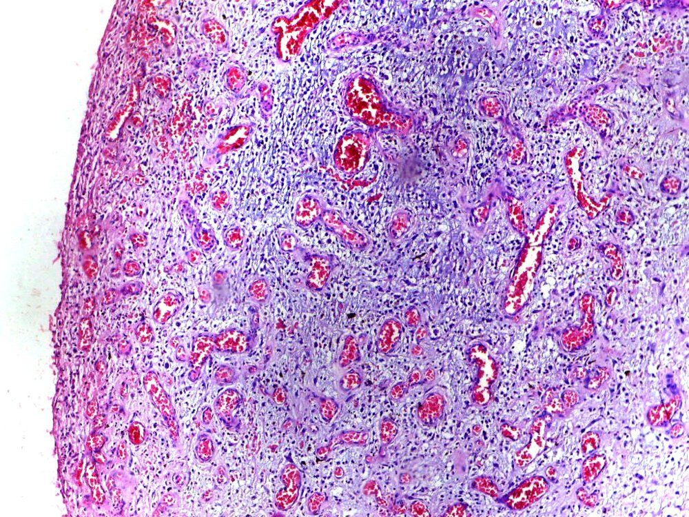
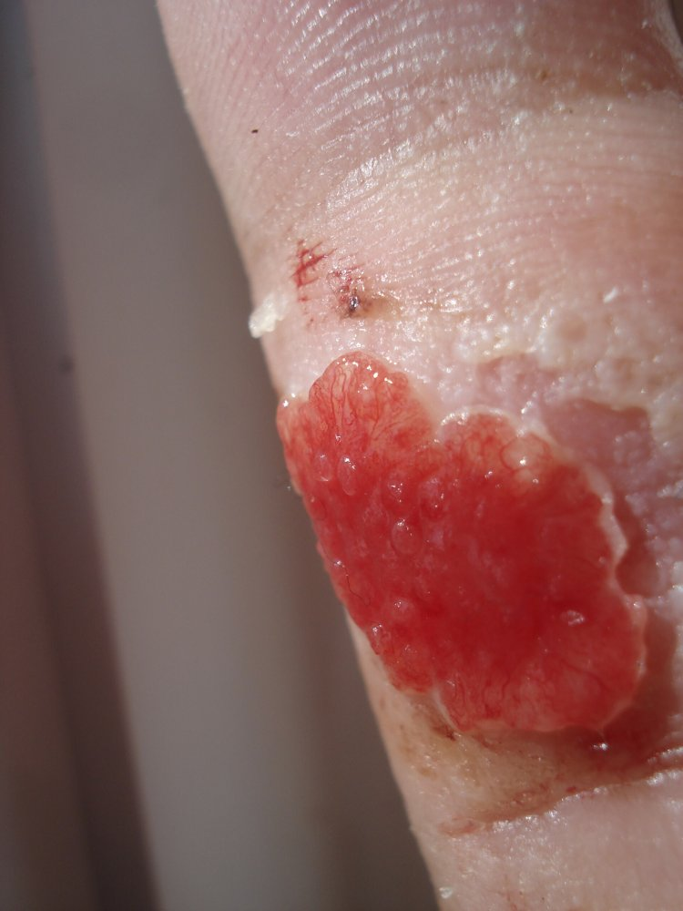
Tie isté kroky v čase ukazuje hojenie infarktu myokardu (Obr. 5.4–5.7): makrofágy odstránia nekrózu → vrastú kapiláry a fibroblasty → pribúda kolagén a ubúda ciev → ostane jazva. Časy sú dlhšie než v kožnej rane a závisia od veľkosti infarktu, lebo nekrózu treba najprv odstrániť a granulačné tkanivo vrastá len od okrajov (→ 1.7 Príčiny a ďalší osud nekrózy).
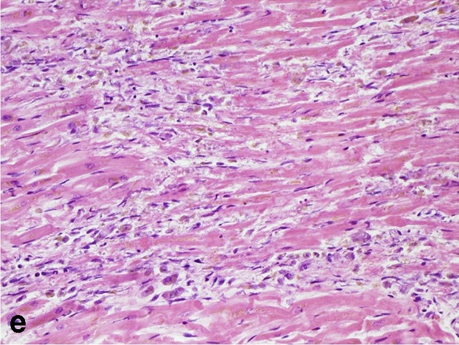
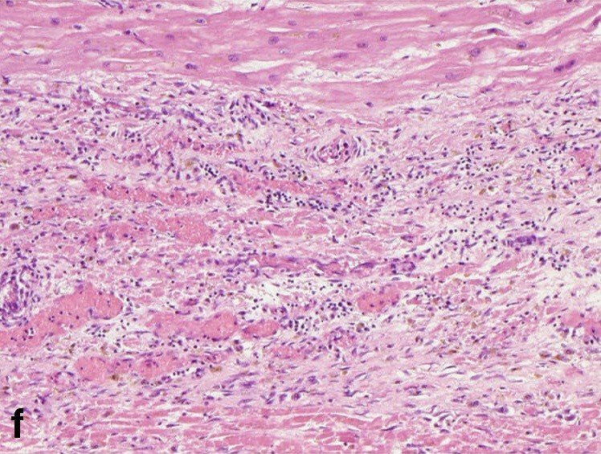
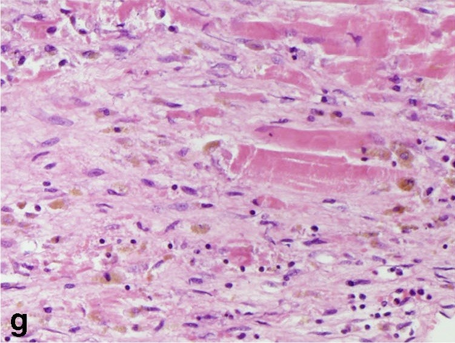
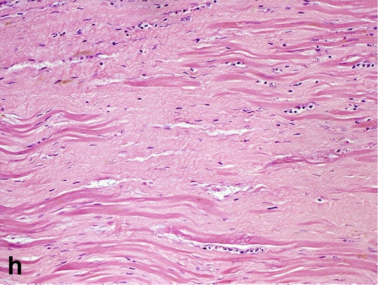
Vek hojaceho sa ložiska sa odhaduje z pomeru zložiek: prevaha kapilár a makrofágov = dni, fibroblasty s kolagénom = týždne, bunkovo chudobné väzivo = mesiace. Kolagén od fibrínu odlíši trichróm (kolagén modrý alebo zelený) a van Gieson (kolagén červený).
Na granulačnom tkanive sa dobre ujme kožný štep – kúsok kože odobratý z iného miesta tela a prenesený na ranu bez vlastných ciev. Hustá sieť kapilár granulácií ho prvé dni vyživuje, kým doň nevrastú cievy. Škodí, keď ho je priveľa: caro luxurians („divé mäso“) vyčnieva nad okraj rany a epitel, ktorý sa plazí len po rovnej ploche, ho neprekryje; chirurg ho preto zoškrabe alebo leptá.
Ako rýchlo to ide. Uvádzajú sa aj konkrétne čísla: nové cievy postupujú do defektu o 0,1–0,6 mm denne, väzivové bunky o 0,2 mm denne a prvé vlákna kolagénu pribúdajú od 6. dňa. Sled dejov je doložený a je v texte; tieto čísla sa doložiť nepodarilo.
5.4Hojenie rany v čase
Rana kože je vzorový model hojenia, lebo v nej prebieha regenerácia (epidermis) aj reparácia (dermis) naraz. Učebnice ho delia na fázy, ktoré sa prekrývajú – hemostáza → zápal → proliferácia → remodelácia. Namiesto poradia fáz je užitočnejšie sledovať, akú úlohu rana práve rieši – úlohy bežia súbežne a každú nesie iná bunka (→ 3.4.1 Leukocytová kaskáda – ako leukocyt opustí cievu).
Rana rieši štyri úlohy naraz: uzavrieť, vyčistiť, vyplniť, spevniť. Čím viac materiálu treba nahradiť, tým väčšia jazva; pevnosť najviac 75–80 % kože.
- Uzavrieť. Prvé minúty patria doštičkám a fibrínu, ktoré štrbinu utesnia; na povrchu zaschnú na strup. Pod ním sa do 1–2 dní posúvajú keratinocyty z okrajov (bazálne bunky sa delia a uvoľnia svoje ukotvenie), kým sa jednovrstvový kryt neuzavrie – dotyk buniek z protiľahlých okrajov ich pohyb aj delenie zastaví (kontaktná inhibícia); potom sa znova rozvrství a obnoví si bazálnu membránu.
- Vyčistiť. Neutrofily sú v rane už v prvý deň a enzýmami rozpúšťajú zrazeninu; od 3. dňa prevládajú makrofágy, ktoré pohltia zvyšky a začnú vysielať rastové faktory.
- Vyplniť. Od 3. dňa rastie granulačné tkanivo, ktorého je najviac okolo 5. dňa; fibroblasty tvoria najviac kolagénu v 5.–7. deň.
- Spevniť. Rana je zvonka zatvorená za pár dní, pevnosť však prichádza pomaly. Na konci 2. týždňa znesie jazva asi pätinu záťaže hotovej jazvy; ďalšie mesiace sa kolagén III vymieňa za typ I a vlákna sa zosieťujú (remodelácia jazvy). Ani hotová jazva nedosiahne pevnosť okolitej kože – najviac asi 75–80 %. Kým je v nej veľa ciev, je ružovočervená; bledne postupne, prestavba trvá zhruba rok.
Ako rana dopadne, závisí od toho, koľko granulačného tkaniva musí vzniknúť – a to určuje šírka štrbiny, množstvo nekrózy a prítomnosť infekcie.
| Per primam intentionem (primárne) | Per secundam intentionem (sekundárne) | |
|---|---|---|
| Typická rana | čistý chirurgický rez, okraje priložené stehom | široká, rozdrvená alebo infikovaná rana, okraje od seba, nekróza |
| Čo treba odstrániť | tenký pás zrazeniny | veľa fibrínu, nekrózy, hnisu, cudzích telies |
| Zápal | slabý, krátky | výrazný, dlhý |
| Granulačné tkanivo | tenký pruh | vypĺňa celú dutinu zdola nahor |
| Kontrakcia myofibroblastmi | minimálna | výrazná – zmenší ranu, ale deformuje okolie |
| Epitel | preklenie štrbinu za 1–2 dni | pomaly prerastá veľkú plochu, niekedy vôbec |
| Výsledok | tenká lineárna jazva | široká, vtiahnutá alebo naopak hypertrofická jazva |
Chirurgické ošetrenie rany má jeden cieľ: zmenšiť množstvo materiálu, ktorý musí granulačné tkanivo nahradiť. Preto sa z rany odstraňuje všetko mŕtve a cudzie (débridement) a okraje sa zbližujú stehom bez napätia. Znečistená rana sa nechá otvorená, čistí sa a zošije až s odstupom (odložená sutúra, hojenie per tertiam intentionem).
Keď je defekt priveľký, plastická chirurgia niektorú úlohu rany preberie alebo urýchli. Každá metóda zastupuje jeden krok hojenia:
- Podtlaková terapia (NPWT) – ranu vyplní pena pod fóliou a pumpa v nej drží podtlak. Odsáva exsudát a zmenšuje opuch, takže kapiláry nie sú stlačené a rana je lepšie prekrvená; mechanický ťah zároveň podnecuje rast granulačného tkaniva. Pripraví tak spodinu pre štep.
- Kožný štep – najčastejšie tenký dermoepidermový (epidermis s časťou dermis) z vlastnej kože pacienta. Uzavrie ranu naraz namiesto pomalého prerastania epitelu z okrajov; nemá vlastné cievy, preto sa ujme len na dobre prekrvenej spodine.
- Dermálna náhrada – lešenie z kolagénu prekryté silikónovou vrstvou, ktorá dočasne zastúpi epidermis. Do lešenia vrastú cievy a fibroblasty pacienta (trvá to asi 3–4 týždne), potom sa silikón vymení za tenký štep.
- Rybia koža – koža tresky alebo tilapie zbavená buniek. Z ryby na človeka nehrozí prenos vírusov ani priónov, preto stačí šetrnejšie spracovanie než pri prasacej či hovädzej koži a v lešení ostane pôvodná stavba aj omega-3 mastné kyseliny. Používa sa na popáleniny, odberové miesta štepov a chronické rany.
Spoločný princíp je ten istý ako pri stehu: telo dostane hotový kryt alebo hotové lešenie, takže musí vytvoriť menej granulačného tkaniva.
Aj „dokonalý“ rez zanechá jazvu. Každý rez preruší cievy, v štrbine vznikne zrazenina a tú musia makrofágy odstrániť. Priestor po nej vyplní granulačné tkanivo a z neho väzivo. Pri tenkej štrbine je jazva sotva viditeľná, no dermis sa nikdy neobnoví ad integrum – chýbajú v nej vlasové folikuly a potné žľazy.
5.5Čo hojenie brzdí
Hojenie potrebuje päť vecí; každý faktor, ktorý ho spomaľuje, zoberie niektorú z nich:
- Kyslík a prívod krvi. Bez kyslíka fibroblast netvorí zrelý kolagén a neutrofil nezabíja baktérie. Chýba pri ateroskleróze, diabetickej mikroangiopatii, žilovej nedostatočnosti, tlaku na kožu nad kosťou (preležanina), u fajčiarov a po ožiarení.
- Stavebný materiál. Bielkovinová podvýživa a nedostatok vitamínu C – bez neho sa kolagén nezosieťuje a je nestabilný; pri skorbute preto krvácajú ďasná a otvárajú sa aj staré jazvy.
- Signály. Glukokortikoidy tlmia makrofágy a tvorbu TGF-β → málo granulačného tkaniva a slabá jazva. Pri diabete sa makrofágy neprepnú z M1 na M2.
- Čisté pole. Infekcia je klinicky najdôležitejšia brzda: predĺži zápalovú fázu a zväčší nekrózu, ktorú treba zahojiť. Zápal udržiava aj cudzie teleso a zvyšky nekrózy (→ 5.7 Organizácia: čo telo samo nevstrebe).
- Pokoj. Pohyb a ťah trhajú krehké nové cievy; rana nad kĺbom sa pri každom pohybe naťahuje.
Horšie sa hoja aj rany starých ľudí, pacientov liečených cytostatikami (brzdia delenie buniek) a pri chronickom zlyhávaní obličiek (urémia).
Hojenie potrebuje kyslík, materiál, signály, čisté pole a pokoj. Keď niečo z toho chýba, rana uviazne v zápalovej fáze → chronická rana.
Keď niektorá z podmienok chýba dlho, rana uviazne v zápalovej fáze a kruh sa poháňa sám (⟳, Obr. 5.9):
Rana, ktorá sa nezahojí do 12 týždňov, je chronická (vred predkolenia pri žilovej nedostatočnosti, preležanina, diabetická noha). Neutrofily a baktérie v biofilme – slizovom obale, ktorý baktérie chráni pred antibiotikami aj fagocytmi – tvoria proteázy, ktoré rozložia rastové faktory aj čerstvú matrix skôr, než z nich vznikne granulačné tkanivo. Bod zvratu = okamih, keď proteázy prevážia nad syntézou: od neho sa rana nezahojí, ani keď sa pôvodná príčina zmierni. Kde prerušiť: débridement (odstráni biofilm a nekrózu), odľahčenie alebo kompresia, obnova prekrvenia, liečba infekcie. Na okraji vredu, ktorý sa nehojí roky, môže vzniknúť dlaždicový karcinóm (Marjolinov vred) – preto sa z neho robí biopsia.
Diabetická noha spája všetky brzdy naraz: pacient ranu pre neuropatiu necíti a ďalej ju zaťažuje, tkanivo je ischemické a neutrofily pri hyperglykémii pracujú zle (→ 2.5.2 Diabetes mellitus). Z otlaku je vred, osteomyelitída až gangréna (→ 1.8 Gangréna). Základom liečby je preto odľahčenie a prekrvenie, nie masť.
Ďalšie vplyvy na hojenie. Popri tom, čo je v texte, sa uvádzajú hormóny štítnej žľazy, pohlavné hormóny, rastový hormón, vitamín B12, choroby krvi a UV žiarenie; ako následok hojenia pigmentácia jazvy. Smer ani mechanizmus účinku sa nepodarilo doložiť.
5.6Keď jazva nevyjde: málo, veľa, zle
Poruchy jazvy vychádzajú z rovnováhy medzi tvorbou a rozkladom matrix a zo sily kontrakcie.
Jazva zlyhá tromi spôsobmi: málo väziva (dehiscencia, prietrž), veľa väziva (hypertrofická jazva, keloid), zlá kontrakcia (kontraktúra, striktúra).
Málo väziva. Najzraniteľnejšie je obdobie, keď rana zvonka vyzerá zahojená, ale jazva znesie len zlomok záťaže (→ 5.4 Hojenie rany v čase). Ak ťah prevýši pevnosť – kašeľ, vracanie, napätá brušná stena pri obezite, alebo je jazva slabá pre podvýživu či kortikoidy –, rana sa rozostúpi (dehiscencia); po laparotómii to môže znamenať vyhreznutie čriev. Ak jazva brušnej steny povoľuje pomaly, vznikne vak, do ktorého sa tlačí obsah brucha – prietrž v jazve (hernia in cicatrice). A tam, kde chýba prekrvenie, epitel ranu neprekryje vôbec a ostane vred (→ 5.5 Čo hojenie brzdí).
Veľa väziva. Keď tvorba kolagénu dlho prevažuje nad rozkladom, jazva vystúpi nad okolie. Dva stavy sa na pohľad podobajú, ale správajú sa odlišne:
| Hypertrofická jazva | Keloid | |
|---|---|---|
| Hranica | ostáva v hraniciach pôvodnej rany | prerastá za okraj rany do zdravej kože |
| Vývoj | často sa za mesiace sama zmenší | nezmenšuje sa, môže rásť roky |
| Po chirurgickom odstránení | zlepší sa, ak sa odstráni napätie | často recidivuje, niekedy väčší |
| Príčina | napätie a dlhý zápal (popálenina, rana cez kĺb) | vrodená dispozícia; stačí drobné poranenie (vpich, piercing) |
| Mikroskopia | uzly fibroblastov a myofibroblastov, kolagén rovnobežne s povrchom | hrubé, sklovité (hyalinizované) kolagénové pruhy, neusporiadané, buniek málo |
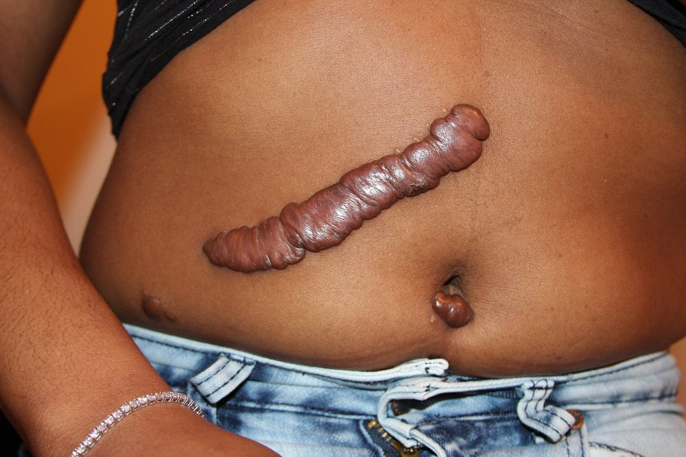
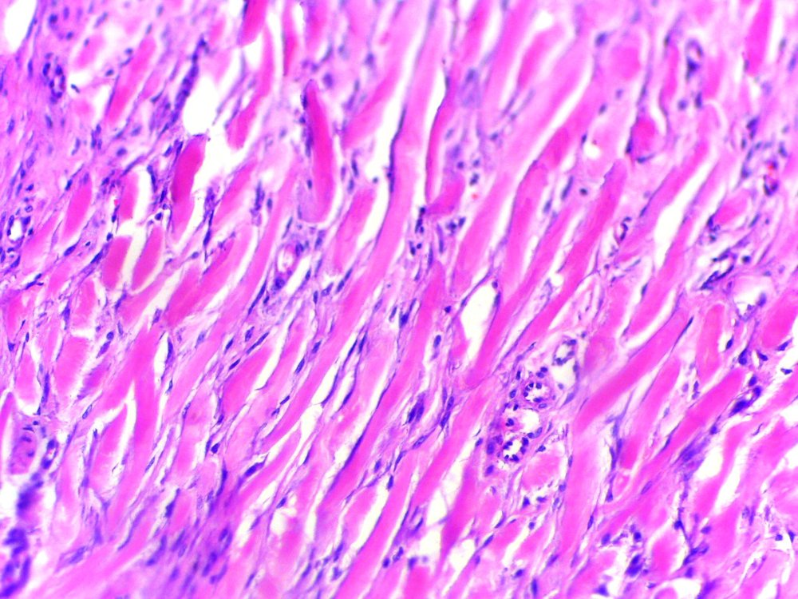
Zlá kontrakcia. Myofibroblasty v jazve po rozsiahlej popálenine ťahajú aj po uzavretí rany. Ak jazva prechádza cez kĺb, zafixuje ho v ohnutí – jazvová kontraktúra. Na vnútorných orgánoch sa to isté prejaví zúžením: striktúra pažeráka po poleptaní, stenóza vývodu, zrasty čriev po peritonitíde.
Popri týchto troch poruchách môže jazvu skomplikovať aj epitel na nesprávnom mieste: rez alebo vpich zanesie kúsok epidermy do zamše, kde ďalej tvorí rohovinu, a v jazve vyrastie implantačná epidermová cysta – hladký uzlík vystlaný dlaždicovým epitelom a vyplnený belavou keratínovou hmotou.
Keloid sa nerieši samotným vyrezaním, lebo recidivuje; excízia sa spája s injekciami glukokortikoidov do jazvy (tlmia fibroblasty, → 5.5 Čo hojenie brzdí), tlakom alebo ožiarením. Hypertrofickej jazve sa dá predísť: rez v smere štiepateľnosti kože, zošitie bez napätia, rýchle prekrytie popáleniny štepom.
5.7Organizácia: čo telo samo nevstrebe
Všetko, čo sa nedá rozpustiť a odplaviť lymfou, sa hojí rovnakou šablónou: makrofágy z okraja hmotu postupne rozkladajú, granulačné tkanivo vrastá za nimi a nakoniec ostane väzivo. Líši sa len to, čo sa rozkladá, a čo ostane uprostred.
Čo sa nedá rozpustiť a odplaviť, sa organizuje: makrofágy rozkladajú z okraja, za nimi vrastá granulačné tkanivo, ostane väzivo.
Kolikvačná (mozog) sa skvapalní skôr, než ju prerastú cievy → dutina (pseudocysta), ktorej stenu tvorí glia, nie kolagén.
(→ 1.7 Príčiny a ďalší osud nekrózy)
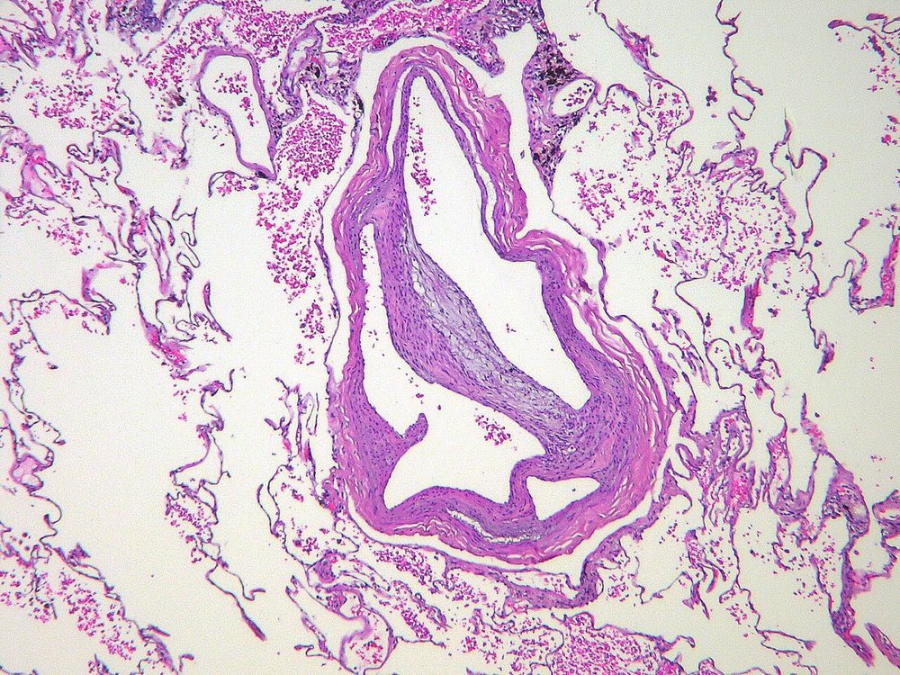
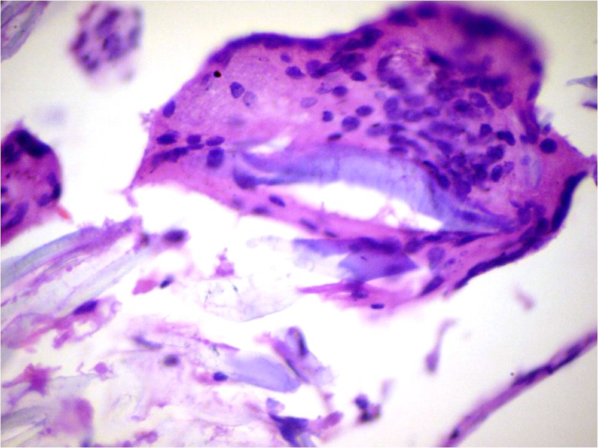
Perlsova (berlínska) modrá zafarbí hemosiderín v siderofágoch namodro – dôkaz staršieho krvácania. Cudzí materiál (steh, mastenec) býva dvojlomný v polarizovanom svetle. Obrovské bunky z cudzích telies majú jadrá rozhodené nepravidelne, Langhansove bunky pri tuberkulóze do podkovy na okraji.
Zlomenina kosti je organizácia hematómu, ktorá končí kosťou: do výronu medzi úlomkami vrastie granulačné tkanivo, z neho vznikne väzivový a chrupkový kalus a ten skostnatie. Ak sa úlomky hýbu, nové cievy sa trhajú, v štrbine prevládne väzivo a vznikne pakĺb (pseudoartróza) – preto sa zlomenina fixuje.
5.8Tkanivá, ktoré sa nedelia
Pri permanentných bunkách sa nedá nahradiť stratená bunka; dá sa nanajvýš obnoviť jej výbežok alebo organely, ak bunka sama prežila.
Stratená permanentná bunka sa nenahradí. Nerv obnoví axón (≈ 1 mm/deň), ak prežilo telo neurónu; srdce sa hojí jazvou, mozog gliózou.
Periférny nerv. Ak prežije telo neurónu a preruší sa len axón:
prerušenie axónu → distálny úsek bez prísunu bielkovín z tela neurónu → Wallerova degenerácia (axón aj myelín sa rozpadnú, odpracú ich makrofágy a Schwannove bunky) → Schwannove bunky sa delia a zoradia do Büngnerových pásov → z proximálneho pahýľa pučí rastový kužeľ a rastie po páse ≈ 1 mm za deň → reinervácia
Rýchlosť určuje, či sa axón dostane k cieľu včas: sval prijme nový axón len asi 12–18 mesiacov, potom nenávratne atrofuje – pri poranení ďaleko od cieľa preto ani úspešná regenerácia nemusí vrátiť funkciu. Ak axóny nenájdu distálny pahýľ (medzera, hematóm, jazva, amputácia), rastú náhodne do klbka so Schwannovými bunkami a väzivom – traumatický (amputačný) neuróm, bolestivý uzlík, ktorý prispieva k bolesti pahýľa a fantómovým pocitom.
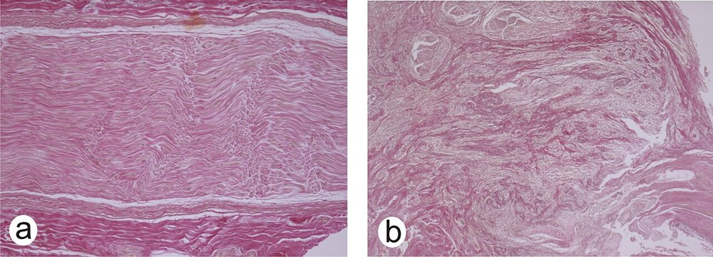
Staršie delenie radí kostrový sval medzi permanentné tkanivá. Dnes je známe, že pod bazálnou laminou každého vlákna sedia kmeňové satelitné bunky, ktoré sa po poranení delia a splývajú do nových vlákien. Kostrový sval sa preto regeneruje, ak ostala bazálna lamina (endomýzium) a prekrvenie; pri úplnej nekróze sa hojí jazvou. Skutočne permanentné sú neuróny a kardiomyocyty.
Srdce a mozog. Kardiomyocyty sa v dospelosti prakticky nedelia – infarkt myokardu sa hojí granulačným tkanivom od okraja a končí jazvou, ktorá sa nesťahuje a vodí vzruchy inak (arytmie, výduť); zvyšný myokard na stratu odpovedá hypertrofiou (→ 6.2 Hypertrofia – tie isté bunky, viac hmoty). V mozgu väzivo takmer nevzniká; po odpratání kolikvačnej nekrózy makrofágmi ostane dutina (pseudocysta) a jazvu tvoria astrocyty (glióza).
5.9Chronický zápal – keď poškodenie a oprava bežia naraz
Chronický zápal je zápal, v ktorom sa súčasne odohráva poškodenie tkaniva, obrana a pokus o hojenie – nikto z nich nevyhrá, a tak proces trvá mesiace až roky. Časová hranica je dohoda, ktorá závisí od orgánu (→ 3.5.1 Akútny, subakútny a chronický zápal); pri vírusovej hepatitíde sa napríklad za chronickú považuje infekcia trvajúca viac než 6 mesiacov.
Chronický zápal: príčina sa nedá odstrániť → poškodenie, obrana a hojenie bežia naraz. Väzivo príčinu ohraničí, no nahradí funkčné bunky.
- Mikrób sa schová alebo sa nedá stráviť. Mykobaktérie prežívajú vo fagozómoch makrofágov; vírus hepatitídy B a C a ľudský papilomavírus žijú v epiteli a imunitu dráždia len slabo; pri imunodeficite nezvládne telo ani bežné huby a baktérie.
- Materiál je nerozložiteľný. Stehy, implantáty, oxid kremičitý (silikóza), azbest, kryštály kyseliny močovej (dna), cholesterol v aterosklerotickom plate.
- Cieľom je vlastné tkanivo. Autoimunita (reumatoidná artritída, Hashimotova tyreoiditída) – antigénu sa telo nemôže zbaviť, lebo je jeho súčasťou.
- Príčina sa opakuje. Opakované ataky akútneho zápalu (pankreatitída pri abúze alkoholu, pyelonefritída pri prekážke odtoku moču) – každý nechá kúsok jazvy a zmenšenú rezervu orgánu.
- MI: mononukleárne bunky – makrofágy (niekedy premenené na epiteloidné a obrovské bunky), lymfocyty a plazmocyty (plazmocyty sú najspoľahlivejším znakom chronicity, → 4.4 Lymfocytárny (nehnisavý) zápal), pri alergii a parazitoch eozinofily; k tomu novotvorba ciev a fibróza vedľa zničeného parenchýmu. Lymfocyty sa môžu zhlukovať do folikulov so zárodočnými centrami (napr. pri Hashimotovej tyreoiditíde).
- MA: orgán tuhší, často zmenšený a zvráskavený (jazvy ťahajú povrch), na reze belavé pruhy väziva; stena dutého orgánu zhrubnutá, priesvit zúžený.
Chronický zápal má dve tváre. Prínos: väzivo príčinu ohraničí a izoluje od okolia (opúzdrená cysta parazita Echinococcus v pečeni, zjazvený tuberkulózny ložiskový uzlík). Cena: väzivo nahrádza funkčné bunky a orgán tuhne. Najhoršie to znášajú orgány, ktoré sa musia hýbať: fibróza pľúc obmedzí ich rozpínanie (respiračná nedostatočnosť), zrasty a fibróza steny čreva brzdia peristaltiku (ileus), zhrubnutý perikard nedovolí srdcu naplniť sa v diastole (konstriktívna perikarditída).
Pokročilá fibróza sa navyše udržiava sama: tuhé väzivo mechanicky aktivuje ďalšie myofibroblasty a horšie prekrvený parenchým ďalej zaniká. Preto treba zasiahnuť skôr, než sa väzivo ustáli – napríklad liečiť hepatitídu C pred vznikom cirhózy.
Chronický zápal je aj živná pôda nádorov: opakované delenie buniek pri neustálom poškodení a oprave zvyšuje šancu na mutáciu. Hepatocelulárny karcinóm vzniká väčšinou v cirhóze, karcinóm hrubého čreva pri dlhotrvajúcej ulceróznej kolitíde, dlaždicový karcinóm v okraji starých vredov a fistúl. Druhým celkovým dôsledkom býva AA amyloidóza a anémia chronických chorôb (→ 3.6.1 Horúčka, reaktanty akútnej fázy, leukogram).
5.10Fibrózy bez známej príčiny
Niektoré ochorenia vyzerajú ako proliferatívny zápal bez spúšťača – fibroblasty a myofibroblasty tvoria väzivo, ktoré utláča okolité štruktúry. Tradične sa nazývajú primárne proliferatívne zápaly alebo idiopatické fibrózy. Ich spoločný mechanizmus je rovnaký ako pri nadmernej jazve: fibroblasty sa nevypnú. Ktorý orgán to odnesie, určí miesto, kde väzivo vzniká:
Fibrózy „bez príčiny“ = fibroblasty sa nevypnú. Dnes sa časť radí k nádorom (fibromatózy) a časť k chorobe asociovanej s IgG4, ktorá sa dá liečiť.
- Dlaň a chodidlo – Dupuytrenova choroba. V dlaňovej aponeuróze vzniknú uzly z myofibroblastov a z nich tuhé kolagénové pruhy, ktoré sa sťahujú a ťahajú prsty (najčastejšie prstenník a malíček) do trvalého ohnutia – Dupuytrenova kontraktúra. Postihuje hlavne starších mužov; riziko zvyšuje diabetes, fajčenie, alkohol a epilepsia. Ten istý proces na chodidle je Ledderhoseho choroba.
- Retroperitoneum – retroperitoneálna fibróza (Ormondova choroba). Tuhé väzivo okolo brušnej aorty obopne a zaškrtí močovody → hromadenie moču nad prekážkou (hydronefróza), infekcie a zlyhanie obličiek.
- Serózne blany – polyserozitída. Opakovaný sterilný zápal s výpotkami a fibrózou zhrubne pobrušnicu, pohrudnicu aj osrdcovník. Puzdro pečene a sleziny sa zmení na hrubý biely obal ako cukrová poleva (Curschmannova pečeň, pri generalizovanom postihnutí Concatova choroba); zrasty vedú k ileu, zovretie osrdcovníka ku konstriktívnej perikarditíde.
- Inde – to isté tuhé väzivo môže vyplniť medzihrudie alebo prerásť štítnu žľazu, ktorá potom stvrdne ako drevo (Riedelova tyreoiditída).
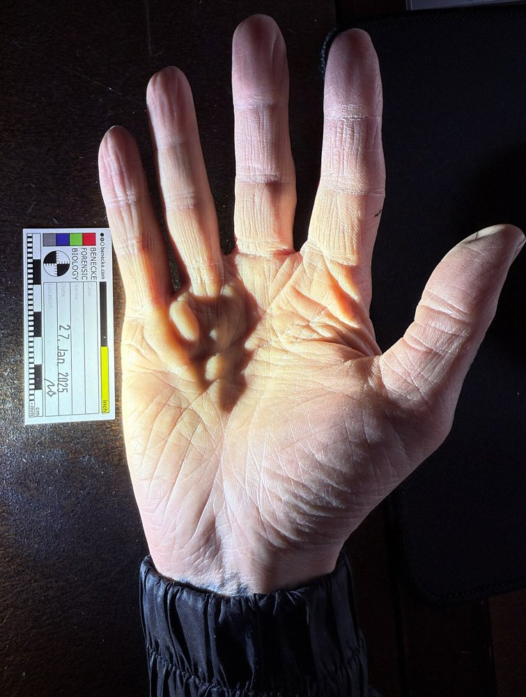
- Dupuytrenova (palmárna) a plantárna fibromatóza patrí v klasifikácii WHO nádorov mäkkých tkanív (5. vyd., 2020) medzi fibroblastové nádory so stredným (lokálne agresívnym) správaním – recidivuje, ale nemetastázuje.
- Časť týchto fibróz – v retroperitoneu, v štítnej žľaze aj v medzihrudí – patrí do choroby asociovanej s IgG4 (IgG4-RD): husté infiltráty lymfocytov a plazmocytov s IgG4, väzivo usporiadané do „vírov“ a zápal, ktorý uzatvára žily. Pre pacienta je to podstatné – IgG4-RD dobre odpovedá na glukokortikoidy.
Fibrózu potvrdí biopsia: patológ hľadá proliferujúce myofibroblasty, plazmocyty s IgG4 (imunohistochémia) alebo nádor, ktorý väzivo vyvolal – retroperitoneálna fibróza môže byť reakciou na lymfóm či metastázu.
Retroperitoneálna fibróza sa prihlási nešpecificky – bolesťou krížov, únavou, zvýšenou sedimentáciou – a diagnóza padne, až keď ultrazvuk ukáže obojstrannú hydronefrózu. Liečba spája uvoľnenie odtoku moču s glukokortikoidmi. Dupuytrenov pruh sa prerušuje alebo vyrezáva, no často recidivuje.
5.11Súhrn a rýchle rozlíšenie
| Situácia | Rozhodujúci mechanizmus | Morfológia | Výsledok |
|---|---|---|---|
| Strata buniek, kostra celá, bunky sa delia | bunky vystelú pôvodnú bazálnu membránu / retikulín | obnovený epitel, pravidelné trámce | regenerácia ad integrum |
| Kostra zničená | makrofág M2 → VEGF, TGF-β → granulačné tkanivo | kapiláry + fibroblasty → kolagén III → I | jazva (≤ 75–80 % pevnosti) |
| Rana per primam | úzka štrbina, málo nekrózy | tenký pruh granulačného tkaniva | lineárna jazva |
| Rana per secundam | veľa nekrózy, infekcia, okraje od seba | masa granulačného tkaniva, kontrakcia | široká alebo hypertrofická jazva |
| Chronická rana | proteázy a biofilm prevážia nad syntézou ⟳ | vred, fibrín, nekróza, fibróza okrajov | nehojí sa > 12 týždňov |
| Keloid | dispozícia, fibroblasty sa nevypnú | hyalinizovaný kolagén za okrajom rany | recidivuje po excízii |
| Organizácia trombu, hematómu, fibrínu | makrofágy z okraja + granulačné tkanivo | rekanalizácia, siderofágy, zrasty | väzivo |
| Cudzie teleso | makrofágy nevedia stráviť → splynú | obrovské bunky z cudzích telies, puzdro | granulóm z cudzích telies |
| Prerušený nerv | Wallerova degenerácia → Büngnerove pásy → 1 mm/deň | bez vedenia: traumatický neuróm | reinervácia do 12–18 mesiacov, inak atrofia svalu |
| Chronický zápal | príčina pretrváva, poškodenie + oprava naraz | mononukleáry, plazmocyty, fibróza | fibróza orgánu, strata funkcie |
| „Idiopatická“ fibróza | myofibroblastová proliferácia alebo IgG4-RD | pruhy myofibroblastov / storiformná fibróza s IgG4⁺ plazmocytmi | kontraktúra, útlak močovodov |
5.12Otázky na zopakovanie
Prečo sa pečeň po odobratí polovice objemu živému darcovi zregeneruje, ale po opakovanej nekróze pri alkoholizme vznikne cirhóza?
Hepatocyty sú stabilné bunky a po poškodení sa vrátia do cyklu v oboch prípadoch. U darcu však ostala retikulínová kostra a portálne polia, takže nové bunky vytvoria funkčné trámce. Pri opakovanej nekróze sa zničí aj kostra – hepatocyty sa množia do uzlov bez správneho napojenia a medzery vyplní väzivo. → 5.2 Kto sa vie obnoviť: bunkový cyklus a kostra tkanivaČo sa stane s tvorbou granulačného tkaniva, ak v rane chýbajú makrofágy (napr. pri vysokých dávkach glukokortikoidov)?
Nevznikne dosť granulačného tkaniva: makrofág najprv uprace zvyšky (M1) a potom ako M2 tvorí VEGF, FGF-2 a TGF-β, ktoré spúšťajú angiogenézu a aktiváciu fibroblastov. Glukokortikoidy tlmia makrofágy aj TGF-β → pomalé hojenie a slabá jazva. → 5.5 Čo hojenie brzdíPrečo jazva nikdy nedosiahne pevnosť nepoškodenej kože?
Kolagén III sa síce vymení za typ I, ale vlákna ostanú v rovnobežných zväzkoch namiesto pôvodného košíkového pletiva; jazva preto dosiahne najviac asi 75–80 % pôvodnej pevnosti. → 5.4 Hojenie rany v časeČím sa líši hojenie per primam od per secundam a čo z toho vyplýva pre chirurga?
Rozhoduje množstvo materiálu, ktorý treba odstrániť a nahradiť: pri primárnom hojení tenký pás zrazeniny, pri sekundárnom veľa nekrózy, fibrínu a baktérií → silný zápal, masa granulačného tkaniva a kontrakcia. Chirurg preto ranu čistí (débridement) a zošíva bez napätia, aby hojenie posunul k per primam. → 5.4 Hojenie rany v časePrečo sa diabetický vred nezahojí ani po zlepšení glykémie a čo je bod zvratu?
Rana uviazne v zápalovej fáze: neutrofily, prozápalové makrofágy a baktérie v biofilme tvoria proteázy (elastáza, MMP-9), ktoré rozkladajú rastové faktory aj novú matrix; otvorená rana privádza ďalšiu infekciu ⟳. Bod zvratu je prevaha proteáz nad syntézou; prerušiť ho treba débridementom, odľahčením, revaskularizáciou a liečbou infekcie. → 5.5 Čo hojenie brzdíAko odlíšiš keloid od hypertrofickej jazvy a prečo je to dôležité pred operáciou?
Keloid prerastá za okraje pôvodnej rany, nezmenšuje sa a má hyalinizované kolagénové pruhy; hypertrofická jazva ostáva v hraniciach rany a často sa sama zmenší. Keloid po samotnom vyrezaní recidivuje, preto sa excízia kombinuje s kortikoidmi, tlakom alebo ožiarením. → 5.6 Keď jazva nevyjde: málo, veľa, zlePrečo sa uzatvárajúci trombus môže „rekanalizovať“, kým veľký hematóm v mozgu zanechá dutinu?
Do trombu vrastá granulačné tkanivo z cievnej steny a jeho nové cievy sa spoja s oboma koncami – vzniknú kanály pre krv. V strede veľkého hematómu sa hmota skvapalní skôr, než doň vrastú cievy, takže sa nedá organizovať a ostane pseudocysta. → 5.7 Organizácia: čo telo samo nevstrebePacient má prerušený nerv v podpazuší. Prečo mu ani úspešne zošitý nerv nemusí vrátiť funkciu ruky?
Axón rastie po Büngnerových pásoch asi 1 mm za deň, no motorické platničky prijmú nový axón len asi 12–18 mesiacov – potom sval nenávratne atrofuje. Pri veľkej vzdialenosti axón nedorastie včas. → 5.8 Tkanivá, ktoré sa nedelia
5.13Zdroje
- Zámečník J. a kol.: Patologie, 2. vyd., Praha: LD Prager Publishing, 2024 (kap. 5 Hojení – regenerace a reparace). ISBN 978-80-11-04919-5.
- Wilkinson H. N., Hardman M. J.: Wound healing: cellular mechanisms and pathological outcomes. Open Biol 2020;10(9):200223. doi:10.1098/rsob.200223
- Michaud K., Basso C., d’Amati G. et al.: Diagnosis of myocardial infarction at autopsy: AECVP reappraisal in the light of the current clinical classification. Virchows Arch 2020;476(2):179–194. doi:10.1007/s00428-019-02662-1
- Zhang L., Weng T., Wu P. et al.: The Combined Use of Negative-Pressure Wound Therapy and Dermal Substitutes for Tissue Repair and Regeneration. Biomed Res Int 2020;2020:8824737. doi:10.1155/2020/8824737
- El Araby M. M., Marcaccini G., Susini P. et al.: From the Ocean to the Operating Room: The Role of Fish Skin Grafts in Burn Management – A Systematic Review. J Clin Med 2025;14(16):5750. doi:10.3390/jcm14165750
- Tottoli E. M., Dorati R., Genta I. et al.: Skin Wound Healing Process and New Emerging Technologies for Skin Wound Care and Regeneration. Pharmaceutics 2020;12(8):735. doi:10.3390/pharmaceutics12080735
- Raziyeva K., Kim Y., Zharkinbekov Z. et al.: Immunology of Acute and Chronic Wound Healing. Biomolecules 2021;11(5):700. doi:10.3390/biom11050700
- Bronte J., Zhou C., Vempati A. et al.: A Comprehensive Review of Non-Surgical Treatments for Hypertrophic and Keloid Scars in Skin of Color. Clin Cosmet Investig Dermatol 2024;17:1459–1469. doi:10.2147/CCID.S470997
- Juckett L., Saffari T. M., Ormseth B. et al.: The Effect of Electrical Stimulation on Nerve Regeneration Following Peripheral Nerve Injury. Biomolecules 2022;12(12):1856. doi:10.3390/biom12121856
- Byun W. S., Lee J., Baek J. H.: Beyond the bulk: overview and novel insights into the dynamics of muscle satellite cells during muscle regeneration. Inflamm Regen 2024;44:39. doi:10.1186/s41232-024-00354-1
- Lambi A. G., Morrell N. T., Popoff S. N. et al.: Let's Focus on the Fibrosis in Dupuytren Disease: Cell Communication Network Factor 2 as a Novel Target. J Hand Surg Glob Online 2023;5(5):682–688. doi:10.1016/j.jhsg.2023.06.017
- Sbaraglia M., Bellan E., Dei Tos A. P.: The 2020 WHO Classification of Soft Tissue Tumours: news and perspectives. Pathologica 2021;113(2):70–84. doi:10.32074/1591-951X-213
- Wallace Z. S., Naden R. P., Chari S. et al.: The 2019 American College of Rheumatology/European League Against Rheumatism classification criteria for IgG4-related disease. Ann Rheum Dis 2020;79(1):77–87. doi:10.1136/annrheumdis-2019-216561
- Wang K., Wang Z., Zeng Q. et al.: Clinical characteristics of IgG4-related retroperitoneal fibrosis versus idiopathic retroperitoneal fibrosis. PLoS One 2021;16(2):e0245601. doi:10.1371/journal.pone.0245601
Autor, licencia a odkaz na zdroj sú pri každom obrázku; súhrn je v registri ZDROJE-OBRAZKOV.md. Obr. 5.1, 5.8 a 5.9 sú vlastné schémy (CC BY-SA 4.0).
Pokračuje v: → 6 Progresívne zmeny a adaptácia